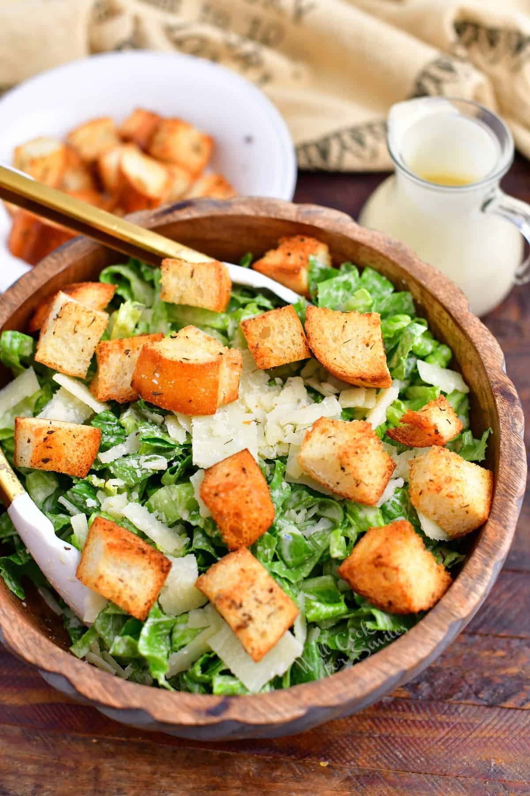

Caesar Salad
Crisp romaine with creamy Caesar dressing and croutons.
Ingredients
- 2 heads romaine lettuce, chopped
- 1/2 cup croutons
- 1/4 cup grated Parmesan
- 1/3 cup Caesar dressing
- Black pepper
Directions
- Wash and chop romaine; pat dry.
- Toss romaine with Caesar dressing.
- Top with croutons, Parmesan, and black pepper.
- Serve chilled.
Step 1: Prepare Your Ingredients
Gather your ingredients for this classic salad: 2 heads of fresh romaine lettuce, 1/2 cup croutons, 1/4 cup grated Parmesan cheese, 1/3 cup Caesar dressing, and black pepper. Fresh ingredients are key to a great salad!
Step 2: Wash and Prepare the Lettuce
Wash the romaine lettuce thoroughly under cool running water, removing any dirt or debris. Pat the lettuce dry with paper towels—dry lettuce is crucial because wet lettuce will dilute the dressing. Now chop the lettuce into bite-sized pieces.
Step 3: Toss with Dressing
Place the chopped romaine in a large salad bowl. Pour 1/3 cup of Caesar dressing over the lettuce and toss everything together until all the lettuce is evenly coated with the creamy dressing. The dressing will cling to every leaf!
Step 4: Top and Serve
Top your dressed salad with 1/2 cup of crunchy croutons, 1/4 cup of grated Parmesan cheese, and a generous grind of black pepper. Everything is better with that salty, savory Parmesan! Serve immediately and chill. This classic Caesar Salad is perfect alongside any meal.